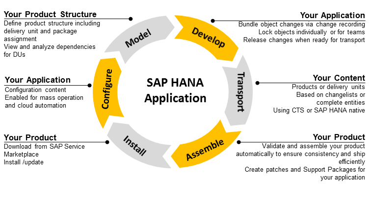

SAP HANA Application Lifecycle Management
SAP HANA application lifecycle management supports you in all phases of an SAP HANA application lifecycle, from modeling your product structure, through application development, transport, assemble, and install.
The following graphic illustrates the phases in a product lifecycle of an SAP HANA application:

- Model
You define your product structure to provide a framework for efficient software development. This includes creating delivery units and assigning packages to delivery units. The delivery units are then bundled in products.
- Develop
You perform software development in repository packages. SAP HANA application lifecycle management supports you with change tracking functions.
- Transport
You can transport your developed content in different ways according to your needs. You can choose between transporting products or delivery units, based on changelists or complete entities. The transport type can be native SAP HANA transport or transport using Change and Transport System (CTS). You can also export delivery units, and import them into another system.
- Assemble
The developed software plus the metadata defined when modeling your product structure as well as possible translation delivery units are the basis for assembling your add-on product. You can also build Support Packages and patches for your product.
- Install
You can install SAP HANA products that you downloaded from SAP Support Portal or that you assembled yourself.
- Configure
If the SAP HANA product delivers configuration content, you can use the process engine of SAP HANA application lifecycle management to automate configuration tasks.
All phases of SAP HANA application lifecycle management are documented in the SAP HANA Application Lifecycle Management Guide. The tasks related to the Install and Configure phases of SAP HANA application lifecycle management are relevant for system administrators and are therefore also documented in the SAP HANA Administration Guide. The tasks related to software development are documented in the SAP HANA Developer Guide (For SAP HANA Studio).
SAP HANA application lifecycle management is installed with SAP HANA as automated content. You can access the SAP HANA application lifecycle management functions in different ways:
- Using the XS user interface SAP HANA Application Lifecycle Management which is available in
the following places:
-
On the SAP HANA XS Web server at the following URL: http://<WebServerHost>:80<SAPHANAinstance>/sap/hana/xs/lm.
- Using a link in SAP HANA Web-based Development Workbench.
For example, to open the home screen, choose
 Navigation Links
Navigation Links  Lifecycle Management
Lifecycle Management  in the SAP HANA Web-based Development Workbench Editor tool.
in the SAP HANA Web-based Development Workbench Editor tool. - Using the context menu in SAP HANA studio.
For example, to open the home screen from, choose
Lifecycle Management Application Lifecycle Management Home Screen from the context menu for a particular system in the SAP HANA Administration
Console perspective in SAP HANA studio. - Using the tile catalog in SAP HANA cockpit.
There are tiles available both in the SAP HANA Application Lifecycle Management and in the SAP HANA Application Installation and Update groups in SAP HANA cockpit that you can customize according to your needs.
-
- Using the command line tool hdbalm.
The file is shipped with the SAP HANA client installation. If you leave the default installation options unchanged hdbalm is located in the ..\sap\hdbclient directory.
You cannot perform all application lifecycle management tasks with one tool. For example, assembling products and software components can only be done using the hdbalm tool, whereas the full set of transport functions is available only in the XS user interface. Whenever a function is available in the XS user interface it is documented there. When used in SAP HANA studio, the functions are the same as in the XS user interface. Therefore, these options are not separately documented.